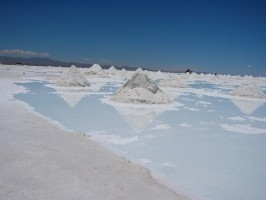

Gobierno Salar de Uyuni. Foto: Gaëlle Bruneau, PNUD. El Estado Plurinacional de Bolivia está bajo la dirección del presidente Evo Morales, elegido por primera vez el 2005 y reelecto el año 2009. Bolivia propugna la división de poderes en cuatro órganos de gobierno: Órgano Ejecutivo, Órgano Legislativo, Órgano Judicial y Órgano Electoral. Historia Bolivia fue fundada como república en 1925, luego de un larga guerra de indepencia con la Corona española. Durante su primer siglo de existencia se suscitaron numerosos eventos políticos y bélicos que marcaron la historia boliviana, entre ellos se encuentran: la Guerra del Pacífico (1879-1884), conflicto bélico con el vecino país de Chile, la Guerra Federal (1898-1899), la cual involucró a los sectores del norte del país (liberales) confrontados contra los del sur (conservadores) y derivó en el traslado de la sede de Gobierno a la ciudad de La Paz, y la Guerra del Acre (1899-1903), serie de enfrentamientos sostenidos con Brasil. Económicamente, durante esa época se levantó el sector extractivo minero, luego de que éste quedará parcialmente desmantelado como consecuencia de la inestabilidad política que trajeron consigo los primeros años de la República. Así surgió en un primer momento un ciclo productivo ligado a la extracción de la plata, y al empezar el Siglo XX, uno nuevo enfocado al estaño. Al cabo del primer centenario de Bolivia, el país vivió dos procesos que redefinieron su situación política y social: la Guerra del Chaco con el Paraguay (1932-1935), y la Revolución Nacional de 1953, la cual infirió en la aplicación de una Reforma Agraria, la nacionalización de las minas de estaño y la creación de una nueva reforma educativa. Esta época se caracterizó por un gran crecimiento económico, especialmente entre finales de la década de 1960 y principios de 1970. Tras una serie de golpes de Estado que encumbraron a diferentes líderes militares, Bolivia inició una nueva etapa el año 1982 con el retorno de la democracia. No obstante, en 1985 la situación económica llegó a un estado de crisis, suscitandose una de las mayores hiperinflaciones registradas en el mundo; el Gobierno de ese entonces decidió liberalizar el régimen económico con la aplicación del D.S. 21060, la cual determinó, entre otras cosas, la aplicación de la ley de la oferta y la demanda en el mercado laboral. Desde entonces se vivieron diferentes momentos en los cuales se ha transitado por diferentes enfoques de administración política y económica del Estado pero siempre en el marco del cumplimiento de la constitución política y el régimen político democrático. Geografía Bolivia se encuentra en la zona central de América sel Sur. Tiene 1.098.581 km2 de superficie. Se extienden desde los Andes centrales hasta la Amazonía, pasando por el Chaco. Población Tiene 10.027.254 habitantes según el Censo Nacional de Población y Vivienda de 2012, con una dinámica que tiende a la urbanización, como los demás países de la región. Se autodenomina plurinacional porque tiene más de 36 pueblos indígenas como los aymaras, quechuas, guaraníes, ayoreos, mostenes, tsimanes, guarayos, tacanas, moxeños, urus, tormonas, yuquis, chiquitamos, afrobolivianos, sirionós, entre otros. Política Desde 2005 y con mayor énfasis con la relección del presidente Evo Morales en diciembre de 2009, Bolivia atraviesa por un periodo de transición política y de reorientación del Estado con la promoción de un modelo de democracia participativa intercultural, guiada por los mandatos de la Nueva Constitución Política del Estado, que incluye profundos cambios en materia de derechos humanos, equidad de género y reconocimiento de los derechos de los pueblos indígenas. Economía La economía ha logrado en los últimos cinco años un desempeño macroeconómico positivo caracterizado por continuos superávits en las balanzas fiscal y comercial, una inflación moderada, aumentos de las reservas internacionales y un crecimiento promedio anual cercano al 5%. Sin embargo, la actividad económica productiva sigue muy vinculada a actividades extractivas intensivas en capital (gas y minería), se ha diversificada poco y presenta niveles de productividad muy heterogéneos. Existe una gran necesidad de consolidar una transformación productiva que pueda generar empleos de mayor calidad. Desafíos El baile de la morenada. Foto: Gaëlle Bruneau, PNUD La transición política que atraviesa Bolivia exige un profundo rediseño institucional y el fortalecimiento de estructuras de democracia representativas articuladas con la instauración de nuevos mecanismos de participación e inclusión en un ámbito de pluralismo jurídico e institucional. A nivel social, varios indicadores sociales siguen muy por debajo de los promedios regionales y persisten marcadas desigualdades de bienestar entre zonas rurales y urbanas, entre regiones, entre hombres y mujeres, y entre ciudadanos indígenas y no indígenas. Este panorama está relacionado con la existencia de importantes inequidades en el acceso y la calidad de servicios sociales básicos. El Gobierno se ha planteado el reto de avanzar hacia sistemas universales de salud y educación en el marco de la “Agenda Patriótica del Segundo Centenario” propuesta por el Presidente del Estado Plurinacional de Bolivia en agosto de 2012. Bolivia también enfrenta desafíos de sostenibilidad ambiental derivados de la reducción de su patrimonio natural y su creciente vulnerabilidad frente a los efectos del cambio climático y los desastres naturales. La pérdida acelerada de la diversidad biológica y la degradación de los recursos hídricos y forestales (se estiman unas 350 mil hectáreas deforestadas por año), así como la contaminación ambiental de los centros poblados, son factores que comprometen el alcance de los ODM relacionados a la sostenibilidad de un modelo de desarrollo organizado en torno a la explotación de los recursos naturales y la ulterior generación de pasivos ambientales y sociales. Logros La situación socioeconómica ha mejorado significativamente, la incidencia de la pobreza extrema se redujo de 38,2% en 2005 a 25,4% en 2010; en el mismo periodo la pobreza moderada se redujo de 60,6% a 49,6% (UDAPE).Se estima que el país tiene una alta posibilidad de alcanzar las metas relativas a reducción de pobreza, desnutrición, malaria y cobertura de agua potable, mientras que se alcanzarán parcialmente las de educación e igualdad de género, quedando como objetivos pendientes los relativos a salud materno-infantil, tuberculosis, VIH-SIDA y Chagas